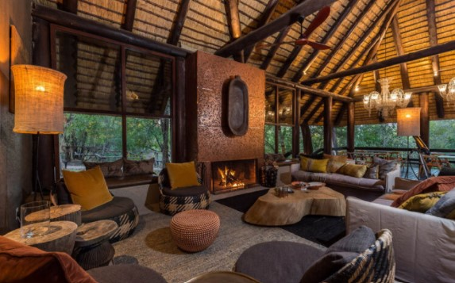
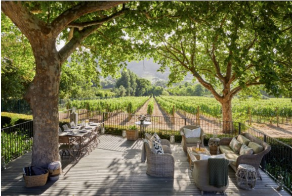

Sleepy lionesses in the heat of Samburu National Park, Northern Kenya
Handsome bull elephant in the Masai Mara.
Chada Katavi, a personal favourite of mine. A true hidden gem, in South Africa Katavi.
A leopard does not change his spots, or change his feeling that spots are rather a credit.
lodges in Sabi Sabi Reserve, Little Bush Camp.
The stunning view from ‘Le Cles de Montaigne’ lodge in Franschhoek.
″
"No one can return from the Serengeti unchanged, for
tawny lions will
forever prowl our memory and great herds throng our imagination”
— George Schaller, Conservationist
[Young male lion looking very serious in the Serengeti..]
Known as “a world in one country”, South Africa’s stunning variety of classic Safari parks, dramatic mountains, gorgeous wine regions, trendy cities and rugged coastlines is remarkable. There really is something for everyone here. As the most sophisticated in terms of its urban scenes. The Safari scene is dominated by the magnificent Kruger National Park, but smaller, lesser known private game reserves are the true gems of the Safari world here. Having been to South Africa, it is a clear winner for family safaris and those wishing to go beyond Safari life and experience urban scenes, excellent cuisine and relaxed coastal settings. There is so much to see and do and see in South Africa!
An array of large national parks and smaller private game reserves are inhabited by an abundance of wildlife. The big 5 is present in most reserves and parks making for a classic safari. I like to send clients to private reserves that are quieter and less busy than the larger national parks as they limit visitor numbers. As the typology and landscape is so diverse, so is the ecology. From Rhinos and Cape Zebra, lions and leopards to smaller rare antelopes, the wildlife on your South African Safari will blow you away.
South Africa is known in the safari world for its top notch hospitality, luxury lodges and incredible cuisine. I will send you to the places that are close to my heart and that I have found to be the best of the best for a South African safari experience. These places are smaller luxury tented camps and lodges usually situated on private game reserves making your safari even more special and “off-the-beaten-track”. In the wine regions of the Cape you will stay in a gorgeous boutique hotel or wine estate overlooking the vineyards and enjoying world class cuisine and wine. From your luxury safari tent on a private game reserve to a beautiful Cape Dutch style lodge in Cape, I will make sure that each place is suited to you and what you want to get from your South African adventure.